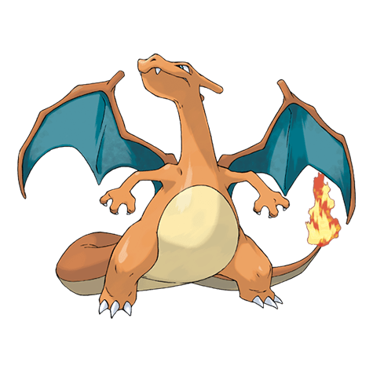

Чаризард

Чаризард — Покемон 1 поколения под номером 6 в Покедекс. Обитает он в регионе Канто и относится к Огненому и Летающему типу. Это последняя постоянная форма эволюции стартового Чармандера. Чаризард летает по небу в поисках сильных противников. Он извергает сильное пламя, которое способно расплавить что угодно. Однако, он никогда не обращает своё огненное дыхание к противнику слабее его самого.
Тип и слабости:
Огненый
Летающий
Эволюция
# 006 Чаризард
Финальная стадия